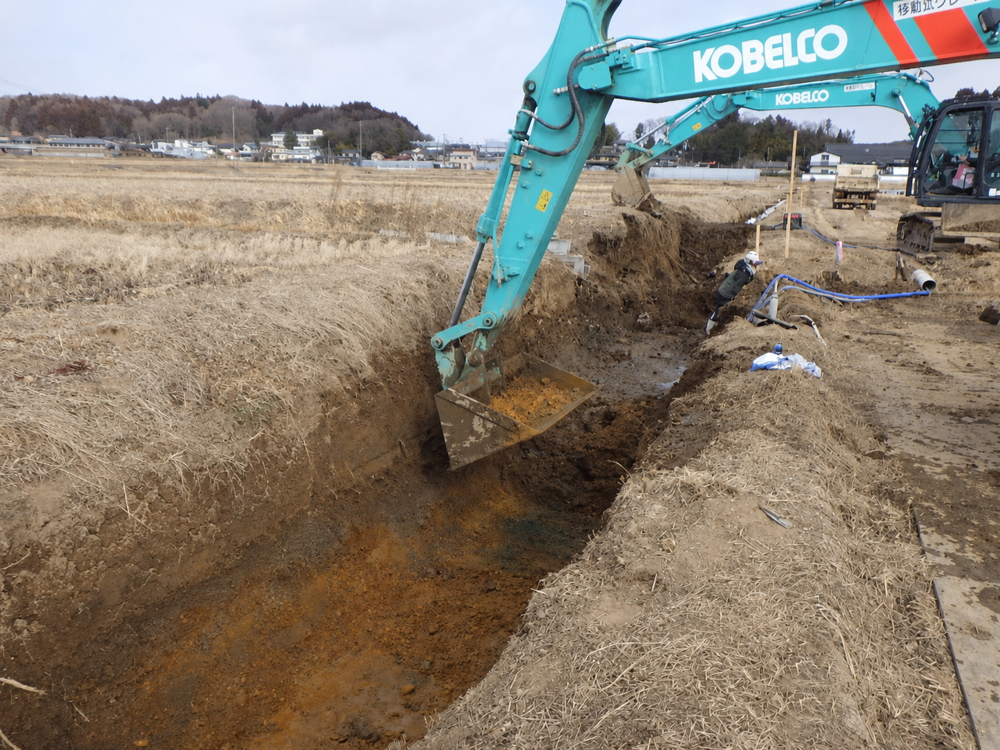

土木一式工事 ｜ 施工実績
WORKS
ICT技術で地域の排水機能を回復する
老朽化した排水路を改修し、地域の排水機能を回復する工事です。
老朽化した農業用排水路や道路側溝を改修する工事です。
ICTによる3次元測量で現況を正確に把握し、プレキャスト製品（ボックスカルバート／U字溝）を布設することで、地域の排水機能を回復しました。
近年頻発する豪雨時の浸水被害を軽減することを目的とした工事です。

水田地帯の掘削から製品の布設、目地の仕上げまでを計画的に進め、品質と安全を確保しながら施工しました。



土木一式工事、解体工事、再生可能エネルギー事業、林業、農業に関する
ご相談・お問い合わせは、いつでもお気軽にお寄せください。